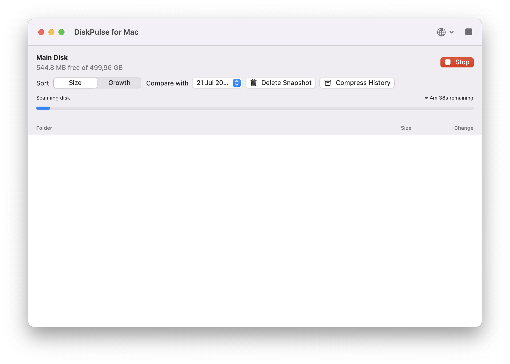
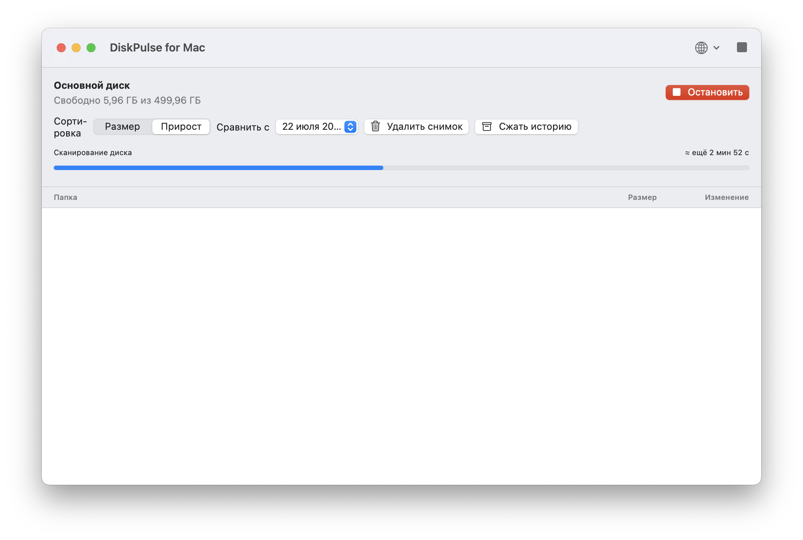
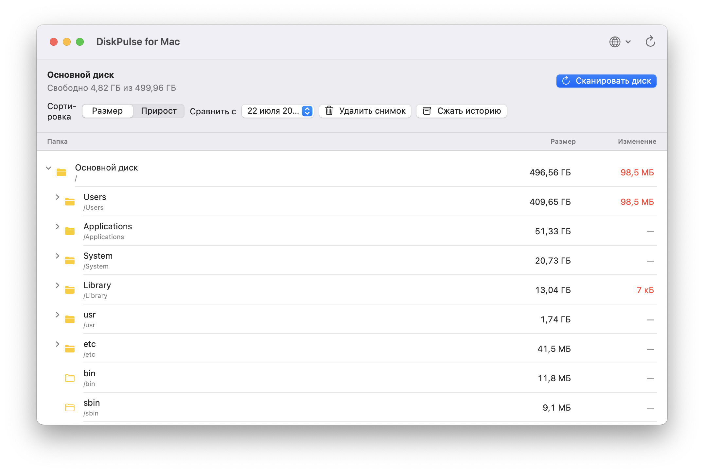

Explore folders from the root of your main disk — not just one selected folder.
Просматривайте папки от корня основного диска, а не только внутри одной выбранной папки.
Disk space, made clear.
Место на диске — без загадок.
DiskPulse scans your Mac, shows the largest folders in a Finder-like tree, and tracks how their size changes over time.
DiskPulse сканирует ваш Mac, показывает самые тяжёлые папки в дереве как в Finder и отслеживает изменение их размера со временем.
Free · macOS 14 Sonoma or later · Your files stay on your Mac
Бесплатно · macOS 14 Sonoma или новее · Ваши файлы остаются на Mac
A focused utility for answering one important question: where did your disk space go?
Простая утилита для ответа на важный вопрос: куда исчезло свободное место?
Explore folders from the root of your main disk — not just one selected folder.
Просматривайте папки от корня основного диска, а не только внутри одной выбранной папки.
Save folder sizes and compare them with a later scan to see what grew.
Сохраняйте размеры папок и сравнивайте с последующим сканированием, чтобы увидеть прирост.
Open folder branches, sort by size or growth, and jump to a folder in Finder.
Раскрывайте ветки, сортируйте по размеру или приросту и открывайте папку в Finder.
See scan progress, estimated time remaining, and stop the scan whenever you need.
Видите прогресс, примерное оставшееся время и можете остановить сканирование в любой момент.
No accounts, no cloud upload, no tracking. History is stored locally on your Mac.
Без аккаунтов, отправки данных в облако и отслеживания. История хранится только на вашем Mac.
Switch the application interface between English and Russian whenever you need.
Переключайте интерфейс приложения между русским и английским в любое время.



DiskPulse is a regular macOS application. No additional software is required.
DiskPulse — обычное приложение macOS. Ничего дополнительно устанавливать не нужно.